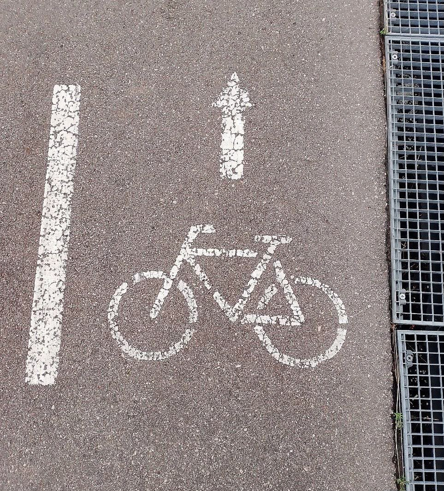
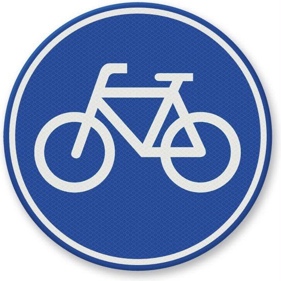
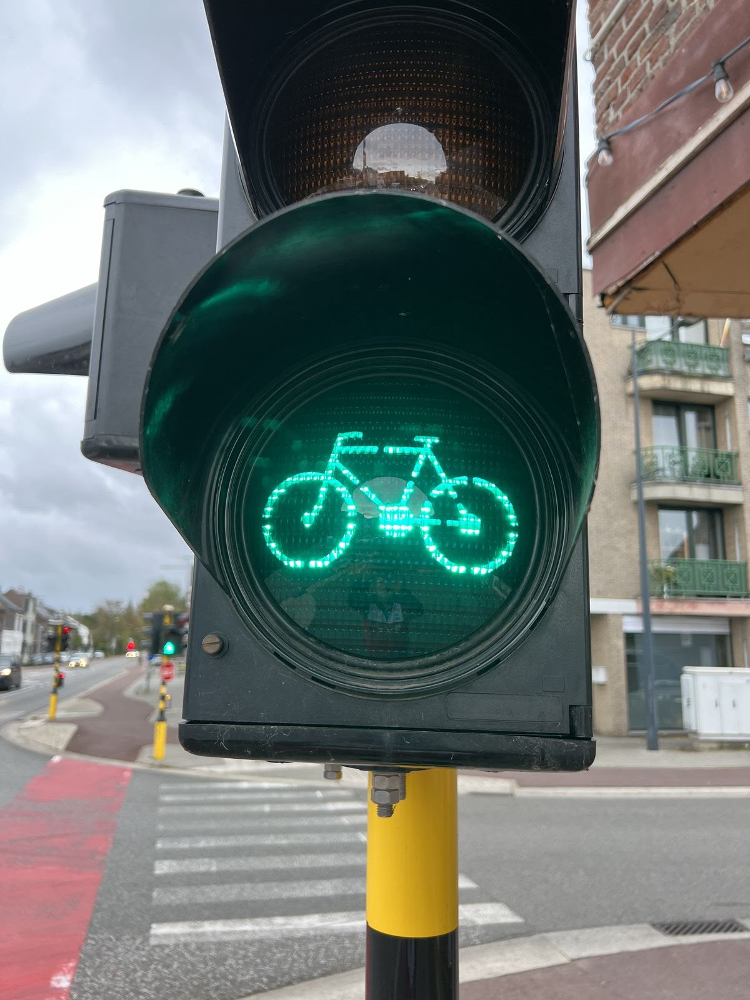

Know the Rules Before You Ride
Cycling in Amsterdam can be busy, especially in the city center.
Knowing the basic rules can help you understand what to do
and make you feel more confident on the road.
Always pay attention to other cyclists, pedestrians, cars,
and traffic signs around you.

Bike Lane
Use the bike lane when one is available.
Bike lanes are made for cyclists and help
keep bicycles separate from cars and other
traffic. Stay in your lane and pay attention
to cyclists around you, especially when
passing or changing direction.

Traffic Signs
Always pay attention to traffic signs
while cycling. Signs can tell you where
you can cycle, where you need to stop,
or which direction you should follow.
Make sure you understand the sign before
continuing your ride.

Traffic Light
Follow traffic lights just like other road
users. Stop when the light is red and wait
until it is safe to continue. Pay attention
to bicycle traffic lights when they are provided.